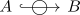
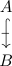
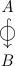
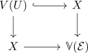
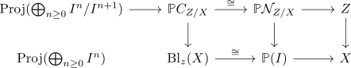

motivic homotopy theory - tubular neighbourhood theorem
List
- existence of a tubular neighbourhood for a smooth embedding
- algebraic tubular neighbourhood theorem
- equivalent characterization of a smooth map of schemes & - characterization of smoothness
- n-jet functor
- dual numbers
- tangent functor of an algebraic functor
- regular scheme & regular local ring
- $\mathrm{dim}_{K(y)}(\mathfrak{m}_{y}/\mathfrak{m}_{y}^2) = \mathrm{krDim}(\mathcal{O}_{Y_x,y})$
- regular closed immersion
examples
- characterization of etaleness
- local structure of smooth maps
- category of smooth schemes
- category of etale schemes



- $\mathrm{Sm}_{X}$ is the smallest subcategory $\mathcal{C}$ containing $X$ such that $Y \in \mathrm{Sch}_{X}$
- finite field extension is a morphism of locally finite presentation
- finite separable field extension is etale
reminde on $\Omega_f$
\begin{tikzcd}
A \arrow[hook, "\circ"{marking, scale=0.8}]{$1}{$2}$0 \\
B
\end{tikzcd}\begin{align*}
\mathrel{\ooalign{$\hookrightarrow$\cr\hidewidth$\circ$\hidewidth\cr}}
\end{align*}
- derivations has a module structure
- derivation functor_
- derivation functor is representable
- universal derivation - todo
- presentation of the cotangent module
- cotangent complex / derived cotangent complex of an derived module over an animated A algebra
- cotangent complex and truncation
- conormal module of a ring map /
- conormal module
- fundamental properties of the cotangent complex
- smooth morphism induces short exact sequence of cotangent modules
- conormal module of a surjection is tensor product
- cotangent complex and formal smoothness
notations
Let $\mathcal{E}$ be a finite locally free sheaf on $X$. Thne $u: \mathcal{E} \rightarrow \mathcal{O}_X$ is called regular if

is tor independent square of schemes
$Z \hookrightarrow X$ is regular if and only if it is locally of the form $V(u)$ for a regular sequence.
Remark
think of such a map as section $\mathcal{E}$
1)
- regular closed immersion is shifted version of smoothness
- closed immersion between smooth schemes is regular
Then

Cartesian squares if regular (?) isomorphisms if regular closed immersion.
- let $f: X \rightarrow Y$ be a m
- Let Z $\hookrightarrow X$ be a morphism in the catsms
- fiberwise regularity implies flat
Let $A \rightarrow B$ be a local ring map between local rings, essentially of finite presentation. Let $M$ be a finitely presented $B$ 3odule.
If $\mathrm{Tor}_{1}^{A}(A/\mathfrak{m}, M) = 0$, then $M$ is flat over $A$
use:
- les for $\mathfrak{m}^2$
- use Artin-Rees Lemma (in noetherian case) ~> to arbirtary ideal
- noetherian approximation